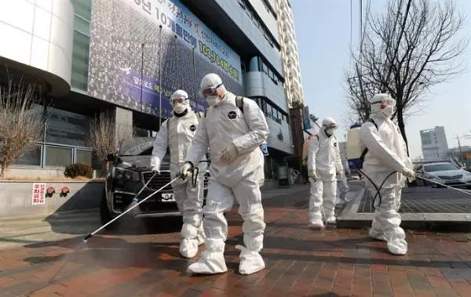

韩国一教堂千人礼拜成重灾区，大邱呼吁250万市民勿外出
原文链接 备份链接 2月19日，韩国大邱市疑似出现超级传播事件的教堂附近，工作人员正在消毒。来源：中央日报 记者：潘金花 “ 大邱市一药店店员表示，MERS时期大邱没有出现确诊病例，人们并没有感到特别担心，但这次大家就像“打仗一样”，非常 …
澎湃新闻记者 刘栋 实习生 董安琪
新冠病毒疫情在韩国的发展突然加速。
2月20日，韩国新增53例确诊病例，超过了过去一个月所有确诊病例总和。21日上午，韩国疾病预防控制中心（KCDC）最新通报称，再新增52例确诊病例，目前全国累计确诊已增至156例。
而这一切，与大邱市的一起“超级传播事件”有着直接的关联，韩国疾控部门认为，目前，至少有82名确诊病例与该事件相关。

韩国防疫人员在大邱市进行消毒
超级传播事件
仅仅在短短三天时间里，韩国的疫情就突然发生了“翻天覆地”的变化。
据澎湃新闻（www.thepaper.cn）统计，在12日到17日间，韩国有5天新确诊病例为零增长，16日韩国政府首次通报了第29、30两例感染途径不明的病例。18日，第31例病例出现，疫情开始向失控的方向发展。19日，韩国突增15例确诊，20日，激增53例，21日上午，再增52例。
韩国目前已确诊的156例新冠病毒感染病例中，111例出现在庆尚北道和大邱市。其中与大邱市一所教会的聚集性感染有关的至少有82例。另外一个主要感染群在庆尚北道淸道郡一所医院内，目前感染确诊人数为16人，其中5人为该院护士。20日韩国首例死亡病例也发生在该医院。
据韩国防疫部门的通报：触发大邱市社区传播并引爆疫情连锁效应的“第31例病例”，是一名61岁的大邱女性。她在过去3个月内没有出过国，也没有与疫区高风险者有“明确接触”史。她曾在1月底因车祸在首尔就医，在2月4日开始出现发烧症状，之后去医院治疗，然而直到2月17日确诊前，这名感染者一直在四处活动，尤其是前后4次前往当地一所教会参加聚会活动。
一直关注韩国疫情发展的韩国华人律师张智华向澎湃新闻介绍，“之所以当中隔了十几天才确诊，是因为韩国医疗部门认为她既没有中国旅行史，也没有和疫情高危人士的接触史，因而忽略了她，只是当做普通的流感症状患者。”
这样的分析也从韩国防疫部门的表态中找到印证——韩国中央应急处置本部副本部长金刚立在20日的发布会上承认，新冠状病毒疫情已出现防疫网之外的案例，开始在社区全面扩散。
而造成大邱市疫情大规模扩散的，或与第31例病例在出现症状到确诊之间频繁的活动有关。
据张智华的介绍，该病例在近两周时间内，不仅往返于首尔与大邱之间，还在大邱市本地前往过公司、多家当地医院、教会、酒店等多处人员密集场所。最让人担心的，是她四次前往当地一所教会参加聚会活动，其中两次是在出现症状之后。
这家教会正是此次“超级传播事件”的中心。据韩国媒体报道，该教会是1984年建立的一个新兴宗教组织，在韩国社会颇富争议性，有人将其视之为极端团体，并受到正统基督教会的抵制。
**
据张智华介绍，这家教会聚会人数有1000多人，每周日的礼拜活动持续两个多小时。聚会中，所有的教徒会在相对密闭的空间内席地而坐，用双臂拥抱彼此的肩膀唱歌。聚会结束后还会在咖啡厅和饭店等地频繁聚集，这种密切的接触，加大了彼此感染和传播病毒的可能性。**
韩国防疫部门表示，目前已从该教会获取了2月9日和16日与第31例患者一起进行礼拜的1001名教徒的名单，正在对这些人员采取居家隔离措施，并通过电话确认这些人员是否出现症状。截至21日上午，已有至少90人出现症状，还有57人尚未取得联系。感染范围可能进一步扩大。
“从韩国政府的表态来看，大邱市目前的情况是比较严峻的。韩国政府对疫情的反应其实一直做的不错。然而由于这个病毒潜伏期很长，传染性强的特点，再加上31例病例的特殊情况，还是出现了韩国政府最害怕的社区传播情况，在当前的情况下，为了避免疫情进一步扩大，大邱市或许应该考虑封城。”张智华说道。
尽举国之力克服疫情
21日上午，韩国国务总理丁世均在中央政府首尔办公楼主持中央应急处置扩大会议时表示，将把新冠病毒感染病例剧增的大邱市、庆尚北道清道郡指定为传染病特别管理地区，立即采取相关措施防控疫情。
丁世均表示，政府将在该地区采取特别防疫措施，全面提供病床和人力物力支持。在国内累计确诊病例过百，部分地区还出现社区感染的情况下，将把防疫重点由防止病毒从国外流入境内转为严防国内社区传染，尽举国之力克服疫情。
20日，重灾区大邱市市长权泳臻更是在电视新闻发布会上直呼，“我们正处于前所未有的危机之中。”他敦促250万大邱市市民尽量减少外出或不要外出，以降低和防止感染新冠肺炎的可能性。
他表示将会对上述教堂的所有信徒进行全面检测，并要求他们待在家中不要外出，并且与自己的家人也进行隔离处置。同时，大邱市政府下令关闭所有幼儿园，所有学校都考虑推迟原定3月初开始的春季学期。
大邱市位于韩国东南部，是韩国的第四大城市，距离首都首尔不到一个半小时车程，人口约250万。据韩联社报道，从20日起，大邱市原本熙熙攘攘的商圈、餐馆和街道，开始变得人流稀少，甚至空无一人，不少市民戴上了口罩，并且相隔甚远，当地网友形容场景仿佛“灾难电影一般”。
为了抵御蔓延的病毒，该市已采取措施暂时关闭公共图书馆，大邱高等法院等公共机构暂时封锁了其大院的某些入口，并安装了热像仪。原定于3月8日在大邱体育场举行的明星演唱会被推迟或取消。
本期编辑 常琛
推荐阅读


原文链接 备份链接 2月19日，韩国大邱市疑似出现超级传播事件的教堂附近，工作人员正在消毒。来源：中央日报 记者：潘金花 “ 大邱市一药店店员表示，MERS时期大邱没有出现确诊病例，人们并没有感到特别担心，但这次大家就像“打仗一样”，非常 …
原文链接 备份链接 韩国发生新冠肺炎超级传播事件，美国担忧日本、新加坡、韩国、泰国及越南等国及台湾地区出现社区传播 文 |《财经》特派记者 金焱 发自华盛顿 编辑 | 苏琦 当地时间2月20日，美国疾病控制与预防中心(CDC)在网站上指 …
原文链接 备份链接 韩国青瓦台。图片来源：维基百科 记者 ：肖恩 “ 韩国已累计确诊204新冠肺炎病例，是海外病例第二多的国家，仅次于邻国日本。 ” 在教会和军队相继出现新型冠状病毒肺炎感染病例后，十几名来自韩国总统府青瓦台的警卫也因为曾 …
原文链接 备份链接 2月18日，在首尔医疗院。图片来源：韩联社 记者: 刘芳 “ 总理丁世均表示，将把大邱市、庆尚北道清道郡指定为传染病特别管理地区，并果断采取相关措施防控疫情。已有14660人接受检测，其中2707人的结果尚未出炉。 ” …
原文链接 备份链接 岛语 非常时期，武汉成了全国人民挂念、祈福的城市。封城后，武汉人民的真实生活是什么样？ 武汉在发生哪些变化？ 正和岛自1月26日起特别推出“叶青专栏”。叶青是一位定居武汉40年的市民，也是一名学者和官员。在过往多期的专 …